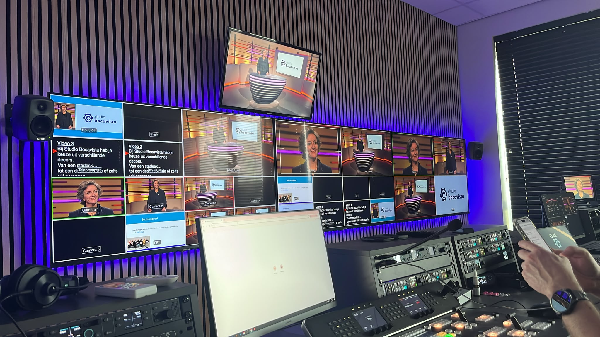

Studio Bocavista
Promotievideo · Lente 2026
ABOUT THIS PROJECT
Voor de studio waar ik mijn stage liep hadden ze een nieuw decor gemaakt voor de verschillende opnames die daar plaatsvinden. Om meer klanten binnen te halen en te laten zien wat de studio te bieden heeft, hebben we daar een video opgenomen om dit nieuwe decor te presenteren.
Het doel van de video was om een goed beeld te geven van het nieuwe decor en de mogelijkheden van de studio. De video moest laten zien hoe de ruimte gebruikt kan worden voor verschillende soorten producties en tegelijkertijd een goede indruk geven van de uitstraling van de studio. Tijdens de opname heb ik de autocue bediend. Daarna heb ik de volledige video-edit gedaan, inclusief de audio mix en colour grade.
Mijn taken:
- Autocue bedienen tijdens de opname
- Volledige edit maken
- Audio mix
- Colour grade

PROJECT MEDIA